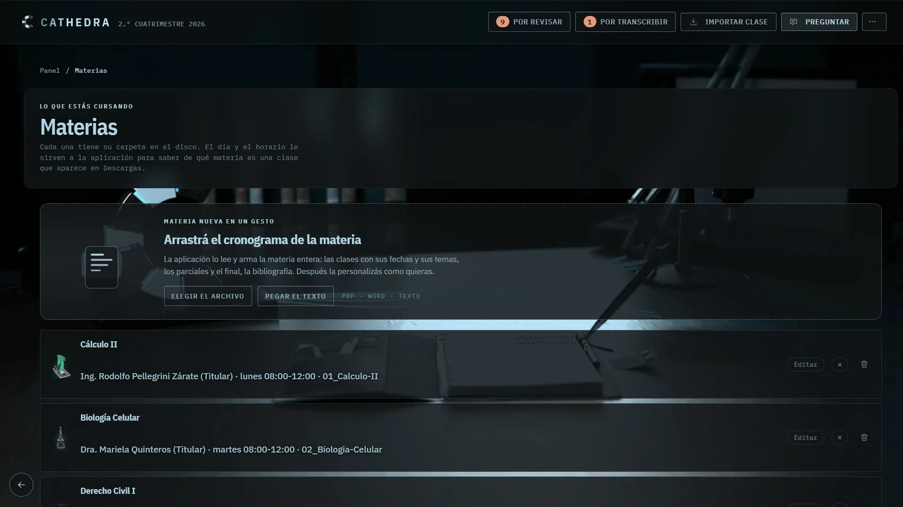
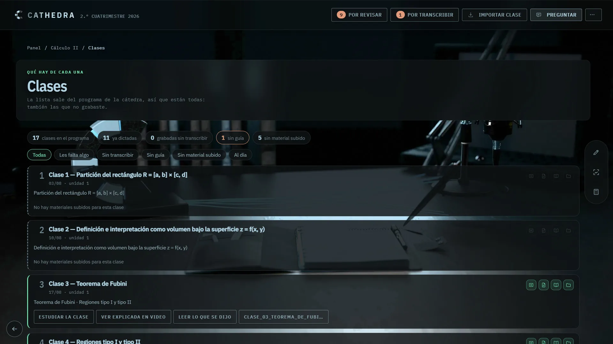
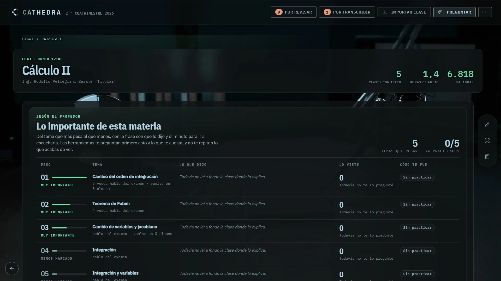
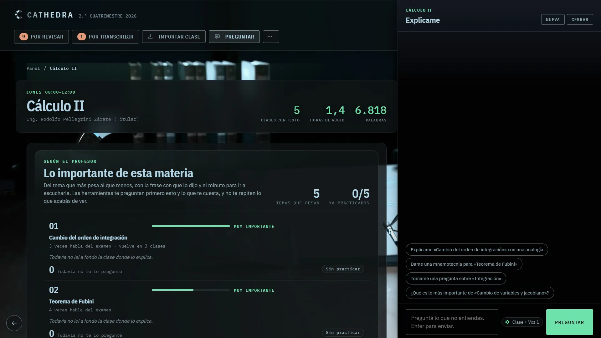
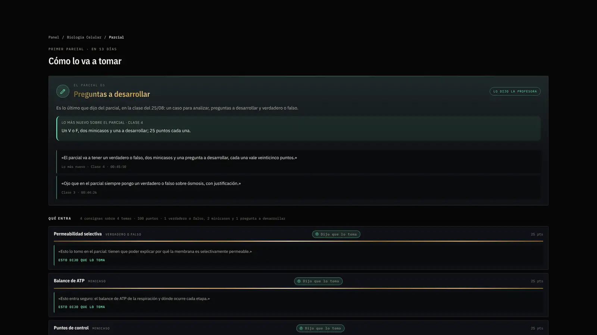
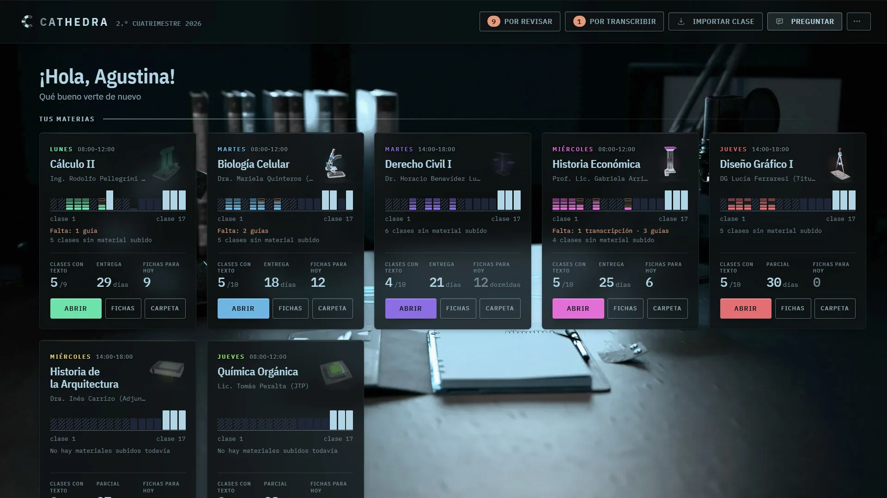
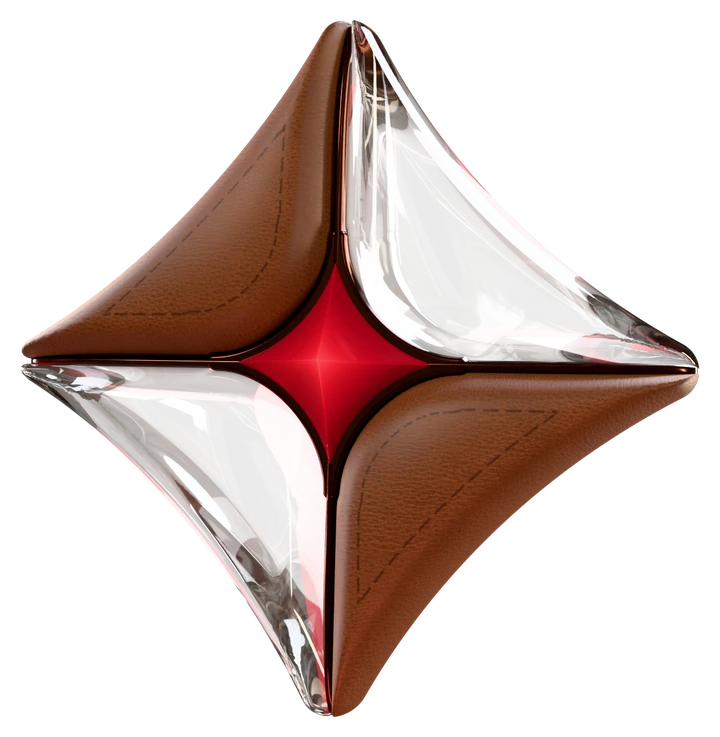

Para tus clases grabadas
Estudiás de lo que dijo tu profesor.
Importás tus clases y Cathedra arma la guía, te contesta con la clase y el minuto exacto, y te toma un simulacro con lo que el profesor dijo que toma.
Windows 10 u 11 · 64 bits
- La citaCada respuesta, con su clase y su minuto
- Sin inventosSi no está en tu material, te lo dice
- En tu computadoraTus clases y tus guías quedan con vos
La cita al minuto
Responde con lo que dijo tu profesor. Y te muestra dónde.
Cada respuesta trae su sello: la clase, el minuto y quién lo dijo. Si algo no está en tu material, el sello queda vacío y te lo dice. Pasá el mouse (o tocá) un sello para ver el tramo de la clase que lo respalda.
Química Orgánica · Clase 3
¿Por qué el benceno no se comporta como un alqueno?
Porque sus electrones están deslocalizados en todo el anillo: esa estabilidad extra hace que prefiera la sustitución antes que la adición.
El profesor lo comparó con el ciclohexeno para que se vea la diferencia de energía.
¿Entra en el parcial la regla de Hückel con ejemplos de heterociclos?
- Fíjense que en el benceno los electrones no están quietos en tres dobles enlaces,
- están repartidos en todo el anillo, y eso le da una estabilidad que un alqueno no tiene.
- Por eso, en vez de adicionar, lo que hace es sustituir.
- Esto lo vamos a usar mucho en la parte de mecanismos.
- Comparen con el ciclohexeno: la hidrogenación libera mucha más energía de la esperada…
- …esa diferencia es justamente la energía de resonancia.
- Nada de lo que dijo el profesor en tus clases ni en tu material habla de heterociclos con la regla de Hückel.
01 · Empezás
Empezás con tu cronograma.
Soltás el cronograma de cada materia (PDF, Word, una foto o texto) y Cathedra arma tus materias y tus clases: los días y el horario, los docentes, las fechas de cada clase y de cada parcial. Lo que el cronograma no dice queda marcado; no se inventa.
Probalo: arrastrá el cronograma de ejemplo
Soltá acá tus cronogramas
o tocá el archivo para usarlo

02 · Subís
Subís la clase.
Soltás el audio o el video de la clase sobre la ventana, o tocás «Importar clase». Si le das permiso, mira tu carpeta de descargas: cuando aparece una clase grabada la transcribe sola y la guarda en la materia que corresponde. El material de la cátedra (PDF, Word, PowerPoint) va a su materia.
- Transcribe en tu computadora, con el módulo que bajás una sola vez: rápido, o preciso para nombres propios y aulas ruidosas.
- Te dice cuánto falta: «transcribiendo: va por el minuto 40 de 112 · faltan unos 9 minutos».
- Sin conexión también transcribe.

03 · La lee
Cathedra la lee y arma la guía.
De la clase cruda saca la guía por clase y por tema. Separa lo que es contenido de lo que dijo sobre el examen, sobre el práctico o sobre la cursada, y marca lo que el profesor dijo que toma. Cada bloque guarda la frase y el minuto en que se dijo.
Clase 4 — Mitocondria y respiración celular

04 · Preguntás
Preguntás, y te contesta con la clase y el minuto.
Le preguntás como a un compañero que tomó todos los apuntes. Contesta desde lo que dijo el profesor y te muestra cómo lo dijo, de qué clase sale y desde qué minuto leerlo o escucharlo. Si suma un ejemplo propio, te avisa que no lo dijo el profesor.
Por chat, en cualquier pantalla. Por voz (habla y escucha), según tu plan.
Tocá una pregunta

05 · Rendís
Te toma un simulacro con el formato que anunció.
Si el profesor dijo «un verdadero o falso, dos minicasos y una a desarrollar, veinticinco puntos cada una», el simulacro sale así, y con lo que dijo que toma. Lo corrige con lo que se dio en clase, te pone la nota y te dice qué no dijiste y de dónde sale cada consigna.

06 · Repasás
Repasás lo que te costó, y «Hoy» te dice qué estudiar.
Lo que erraste en el simulacro, en los juegos o en las fichas va a tu mazo de repaso, con la página de donde sale, y vuelve cuando toca. Al abrir, «Por dónde empezar» te da una tarea por materia, ordenada por los días que faltan para cada examen; «Cuánto por día» reparte lo que falta entre todas.

Y todo lo demás
Lo que también hace.
Cada tarjeta es una pantalla de Cathedra. Tocala para verla entera.
- Grabar en vivo (opcional) prontoTe sentás en el aula con el micrófono y Cathedra transcribe en el momento, con aviso si estás lejos o hay ruido. Todavía no está en la app.

Para Windows
Bajala y empezá por la próxima clase.
Descargar para Windows- Sistema
- Windows 10 u 11 · 64 bits
- Espacio
- Unos 2 GB libres
- La primera vez
- Desde Ajustes › Módulos bajás la transcripción una sola vez y te muestra cuánto falta. Después, ya podés subir tus clases.
Tu computadora
Es una estimación con lo que el navegador deja ver. Al instalar, Cathedra mide tu computadora de verdad y te propone el paquete justo.
Como todavía no está firmada, Windows muestra un aviso azul: tocá «Más información» y después «Ejecutar de todas formas».
-
Windows protegió tu PC Más información No ejecutar
-
Windows protegió tu PC Aplicación: Cathedra-Setup.exe Editor: Editor desconocido Ejecutar de todas formasNo ejecutar
Si te invitaron, pegá tu código en Ajustes › Motor.